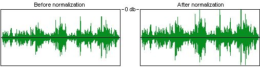

| |

rio car dot org FAQ (Frequently Asked Questions)
Category: Main -> MP3 creation and playback questions
| Answer | · What is the best way to create MP3s?
(Entry last updated on June 15th, 2002)The Rio Car player is a very high quality piece of equipment, so it's important to make sure your MP3s are created carefully. The old adage is "garbage in, garbage out", which applies here: If you create awful-sounding MP3 files, then they will sound awful when played back in the player. But if you use care in creating your MP3 files, you will get fantastic-sounding results that will make your Rio Car sound every bit as good as a high-end CD player.
There are so many different MP3 creation packages, though, it's tough to give specific advice in this area. Each package has strengths and weaknesses, and they are changing and updating their features all the time.
For those who are just getting into making MP3s, the quick answer (for Windows users, anyway) is to use the either Exact Audio Copy or AudioGrabber, with the latest version of the LAME encoder. However, MP3 creation is still a bit of a black art, and you still need to consider the issues outlined below.
Because MP3 is a "lossy" method of data compression, judgements about the quality of the resulting audio can be very subjective. However, there are some general concepts you should understand about creating MP3s which will help you make your own choices.
When you create an MP3 from a CD, there are three stages involved. The first is ripping, the process of digitally extracting the audio data from the CD. The second is encoding, which is how the raw audio data gets data-compressed and converted into the MP3 file format. The third stage is tagging, which is how the song, album, and artist info gets entered into the file.
Many software packages will seem to do all three stages at once, making it look like one seamless process. In fact, the entire process of all three stages is sometimes referred to as "ripping", but technically that term really refers to only the first stage. The important thing to understand is that all three are separate processes and each has its own quirks. Some software packages will separate the three stages and allow you to use your own tool choices for each stage. These are the most flexible and have the potential to produce the best results, but they are not the most easy to use. The packages which hide all the details from you will be the most easy to use, but will give you less control over the process, and less control over the quality.
Ripping
Ripping is the slang term for DAE, or Digital Audio Extraction.
The goal of ripping is to extract the audio data from the CD in the form of an exact digital copy. If there are problems during this stage, there can be audible errors in the music, ranging from very subtle to irritatingly obvious.
- The CD-ROM drive you use to perform the rip is a vital component of the system. Some drives will do better than others at DAE. Even different models of drive from the same company will produce different results. It has been said that the SCSI drives made by Plextor are the best at this job because they can do block-accurate addressing on audio CDs.
- The speed at which the extraction happens (usually expressed as some multiplier of the realtime audio playback speed) is a factor. For instance, a drive may allow 24x ripping, but it might do a terrible job at it. Sometimes it's better to rip at a slower speed. This depends on the drive.
- The speed of your computer, the speed of its IDE data bus, and the amount of RAM in the computer might be a factor. If the computer can't stream the data smoothly, there might be errors in the rip.
- Different pieces of software will use different methods to make sure that the audio data is extracted correctly. Some will go to great lengths to verify that the extraction worked, others will just assume that the CD drive fed them the data OK and won't give any warning at all if there's a problem. Others will only do this extensive error checking if you select the appropriate options in its configuration menu. Please see Andy McFadden's CD Recordable FAQ for more information on this subject. Software that's known to do a good job at this are CDParanoia (for Linux), and AudioGrabber, AudioCatalyst, and Exact Audio Copy (for Windows).
- If your rips are getting errors, don't forget to check the online help in your ripping software for information on how to enable the error-checking features (sometimes called "sector synchronization"), if any.
- Some computers will get rip errors if you try to do anything else on the computer while a rip is proceeding. If this is the case, learn to start the ripper and then just leave the mouse alone. Also remember to disable any screen savers before ripping.
- Depending on the software installed on your PC, you might need to install a third-party ASPI driver before your ripper works properly. Check your ripper's documentation for details about ASPI drivers.
- Sometimes a given drive/ripper will have trouble extracting the last track of a given disc. Although it could be due to a bad drive or some other problem, it might be something very simple: It might be due to a CD-ROM data track being embedded at the end of the CD. If this is the case, alter the length of the last track (usually done by opening the properties box for the last track before ripping) so that it ends at the correct spot. If your ripper doesn't have the option to change the track start/end times, throw it away and find a better ripper. You could also try ripping the disc on a different PC and see if you get better results.
- At first, you must listen to your rips carefully for audible errors. Only after you've ripped and previewed several albums can you be sure that your particular combination of PC, drive, software, and settings is doing a good job. Make sure to preview using headphones, because some of the problems are only detectable with careful headphone listening.
- Examples of audible ripping errors would be: Pops and clicks, skipped sections of the track, brief bursts of static, loss of stereo image, and sudden shifting of the stereo image between channels.
Encoding
Encoding is the process of changing the raw wave audio data into an MP3 file. It involves data-compressing the audio stream so that it takes up less storage space (this is the whole point of MP3).
MP3 encoding is "lossy", meaning that some data is lost in the process. Different encoders go about the job differently and produce different results. These differences are incredibly subtle, and most people can't tell the difference between encoders.
Encoders are constantly changing and evolving, with each group of engineers trying to outdo the others in encoding quality. Any advice given here regarding which encoder to use would probably be outdated in a month, so I'll refrain from recommending a specific one. Rather, I'll give more general advice regarding encoders.
- You don't always get to choose your encoder. You might have purchased a ripping package which includes a built-in encoder, with no option to change it.
- Even if you do have an option to change the encoder, you might only get to choose from the Windows built-in codecs. Remember that some of these built-in codecs are the low-quality for-free versions, and will produce substandard results. More advanced options for selecting encoders can be found in some software packages. The most flexible are the ones which allow you to run batch files or to invoke command-line encoders. Then you can use any encoder you like.
- Some encoders allow you to choose between high quality encoding and fast encoding. This isn't the same as the bit rate (discussed below). This is the choice of the encoder's analysis algorithm: How much CPU time do you want to devote to the analysis of the audio file? When encoding files for the Rio Car, you should always choose the high quality option.
- If an encoder claims to be able to do its job in "real time", make sure it's not using its low-quality option. The best encoders will take a little while to churn on each file.
- The most popular encoders are Fraunhofer, Xing, and LAME. There are others. They all have their strengths and weaknesses. Xing is known for being fast even in its high quality mode, and for being able to create variable bit rate files. LAME is known for being fully open-source and free from licensing restrictions. LAME is also undergoing constant improvement and is probably the most customizable of all the encoders. Fraunhofer is a very solid encoder that produces extremely high quality results, but it is expensive, slow, and it only produces constant bit rate files.
- The bit rate is a choice you make in your encoder. Your choices will range between around 96kbps up to about 320kbps. It determines just how much disk space the resulting file will consume. For instance, a 5-minute song at a bit rate of 128kbps will be approximately 5 megabytes in size. The more you increase the bit rate, the larger the file, but also the higher the quality of the sound.
- Most people are happy listening to 128kbps files on cheap stereo equipment. However, an audiophile will probably be able to hear the loss of quality at 128kbps on good equipment. 160kbps is the rate at which it starts to become hard to hear differences between encoders and between the CD and the MP3. It depends on the music, though. A given song might sound fine at 128, and another song might need to be cranked up to 256 before the compression artifacts disappear.
- The differences between encoders are primarily noticeable at low bit rates. For instance, when you see a shootout test between different encoders, they will usually do their tests at 128. Above that rate, it starts to get harder and harder to tell the difference between encoders. So if you encode everything at bit rates of 160, 192, or above, it probably will make little difference which encoder you use.
- Some encoders allow you to use Variable Bit Rate, or VBR. This is a good feature. The encoder decides, based on the content of a given frame (an MP3 frame is a block of audio about .02612 seconds long), what bit rate the frame should be encoded at. For instance, if a frame contains relatively simple audio frequencies, it can use fewer bits and therefore take up less disk space. A VBR file will give you more "bang for your buck" in terms of the quality/size tradeoff. Given two files of equal size, the Variable Bit Rate file will sound better than the Constant Bit Rate file.
- High frequency rolloff is something to consider for some audiophiles. High frequencies are the hardest thing for an encoder to produce. The higher the frequency, the more bits are required to reproduce it properly. For this reason, most encoders will roll off frequencies above about 16-18khz. Most people don't even have equipment that will produce frequencies that high, or hearing good enough to hear frequencies that high, so it's rarely noticed unless the software is doing a particularly harsh job of it. Early versions of the Xing encoder got bad reviews because of this rolloff (and keep in mind the latest version of AudioCatalyst now has an option to allow the high frequencies with the Xing encoder).
- The types of quality losses you can expect to hear on a given MP3 file will depend on the music being encoded, the encoder, and the bit rate. Common complaints about low bitrate MP3 files include a loss of high frequency detail, a loss of stereo image, a loss of presence or a lack of "air" around the instruments, strange burbly artifacts in the silent spaces between notes, pre-echo on percussive material, and swishy- or burbly-sounding cymbal crashes. All of these problems can be reduced by increasing the bit rate of the encoding. For most listeners, these problems are so subtle as to be completely inaudible. I can hear some of these artifacts in a few of my lower-bitrate MP3s, and when I try to point them out to people (including some audiophiles), they can rarely hear them.
- The best way to pick out compression artifacts is to examine what they sound like in pathological situations, then listen for more subtle versions of the same artifacts in high-bitrate material. For example, encode a track of a lone female singer with a lot of air around the voice (I like the album "Mouth Music" for this) at a low bit rate (say, 96kbps) and listen intently at high volume on headphones. Another type of track which will point out encoder artifacts is solo piano pieces. There are also tracks on the IASCA competition CD which will help you pinpoint encoder problems. Once you know what to listen for, then try encoding the tracks at higher bit rates with different encoders, and see if you can pick out the same artifacts, but more at a much more subtle level. Once you can't pick out the artifacts any more, that's the encoder's "sweet spot" for your ears.
- Finally, remember something important: When you're trying to compare an actual CD with an MP3, remember that the CD's audio playback circuitry is different than the MP3 audio playback circuitry, even if you're playing the CD and the MP3 on the same computer. There will be differences in frequency response between any CD player and an MP3 player. CD audio usually has artificially boosted bass, for example. So if you're planning on a head-to-head comparison, make sure you're comparing apples to apples first, for instance, by using the ripped WAV file for comparison instead of the CD audio track.
Tagging
Surprisingly, tagging is one of the most important parts of creating an MP3. It is especially important for the Rio Car player, because this information is what you use to categorize, select, and search for your music on the player. If your tags aren't correct, you won't be able to find the music you're looking for.
More information on tagging can be found below.
Back to Top
| · How should I name my MP3 files and ID3 tags?
(Entry last updated on September 20th, 2004)Tags vs. Filenames
The ID3 tag is a block of text information embedded in the MP3 file, which contains data such as Title, Artist, Album, Year, and Genre. There are two types of ID3 tags: Version 1 tags (usually referred to as just "ID3"), and version 2 tags, referred to as "ID3v2". V1 tags are limited to 30 characters for each field, but V2 tags don't have this limit. Tags are usually used to categorize and organize your MP3s.
The player goes entirely on its internal database of song information, which it pulls from the song's tags. You don't absolutely have to have the tags filled out ahead of time... but it REALLY helps a lot. If your tags are wrong, the track information can be edited after you've already put the songs into the player, but it's much easier to have your ID3 tags in order before you start sending them to the player.
Many people use file names to organize their MP3 collection on their PC, but file names are not used by Emplode or the player. So it's important to get your tags right ahead of time.
The file names are only important when you're dragging and dropping the songs onto Emplode for the first time, and they are only used to define the order of songs in a given album. Personally, I make sure to have the album and track number as one part of the file name, so that I can drag them into Emplode in the correct order. For instance, my file names look like:
Rush - Moving Pictures - 01 - Tom Sawyer.mp3
Rush - Moving Pictures - 02 - Red Barchetta.mp3
Rush - Moving Pictures - 03 - YYZ.mp3
(etc.)
Almost all MP3 creation programs allow you to save your MP3s as those file names by default, ensuring that they will drop into Emplode correctly. Full support for alphanumeric file ordering is found in Emplode version 2.0 and later.
Note: If you feed Emplode a song without a tag, it will populate the "Title" field with the file name and leave all the other fields blank. Although this is true, it is not recommended, since most of the player's search functions and information screens wouldn't work as intended.
Tagging with your ripper
Most ripping packages will, if desired, automatically connect to the internet and download the CDDB (Compact Disc Database) title information for that album. This is a nice feature, and it's plenty for most folks.
However, it's important to remember that the CDDB is filled out by members of the general public. In case you haven't checked lately, the grammar skills of the general public aren't too great. In other words, the CDDB is riddled with errors. So if your ripping package is using the CDDB to grab its track data, you might want to proofread it carefully and make corrections where needed.
While you're at it, you might want to standardize things such as artist names. For instance, I change all of my "Steve Morse Band" tags to simply say "Steve Morse" in order to match his other albums. I know that this is not technically correct, but it makes categorizing and searching for his tunes on the player much easier. You might take this a step further and correct all of his songs to "Morse, Steve" if strict alphabetization is your cup of tea.
Because this sort of thing is very haphazard in the CDDB database, I find that it's almost as easy to enter the album information myself by hand. That way, I can make sure it's correct the first time.
Tagging after-the-fact
There are many third-party tag editing utilities available. A search on MP3.com will give you a very large list. The one most recommended by Rio Car owners seems to be MP3 Tag Studio, a Windows program. Although its user interface has a slight learning curve, it's very powerful and can do advanced things like rule-based processing on your entire collection. You can, for example, rewrite all your tags based on the file names or vice-versa. You can strip files of their V1 tags, their V2 tags, or both. You can copy V1 tags to V2 tags or vice versa. It's a veritable swiss army knife of tag editing tools.
Also highly recommended is Tag&Rename, a Windows utility.
V1 vs V2 tags
If a file has both a V1 tag and a V2 tag embedded within it, Emplode will pull its data from the V2 tag. So if your file has incorrect V2 tags combined with correct V1 tags, you will have to either strip or update the V2 tags. More details on this can be found in the Troubleshooting section of this FAQ.
Fixing less-than-perfect tag data
Sometimes the CDDB will contain tag data which is technically correct, but not necessarily ideal for the purposes of using the songs on the Rio Car player.
The biggest example of this would be compilation and soundtrack albums. For instance, if you purchased the soundtrack album to The Sopranos, you'll find that all the ripped songs say "Various Artists", "The Sopranos", and "1999". If you're really anal, you might want to look up the data for each song and enter it correctly.
This is time-consuming, but it's nice to be able to punch in the year and have it actually play songs recorded in that year instead of spouting all the tunes that ended up on movie soundtracks from that year. It's also nice to be able to punch in an artist and have all of their songs come up, including ones from compilation albums.
If you want to enter this information, but can't glean it from the album's liner notes, you can look it up at Allmusic.com.
Track name suffixes
Sometimes you'll have more than one track on the player that's got the same title. For instance, you might have a studio recording of a song as well as a live performance of the same song. Or perhaps an acoustic or instrumental version of the same song.
Because those songs have the same title, they will look exactly the same in the Search by Title screen on the player. If you want to be able to distinguish the songs from each other in that screen, add some text in parentheses to the end of the title. For example, on my player, I have:
Big Love
Big Love (Live)
So when I perform a search, I can tell the difference.
This is also useful for being able to tell a remixed or remastered version of a song from its original recording. For instance, if a compilation or soundtrack album contains a different version of the song than the original album.
Folder Structure
Although the file names are not used by the Emplode software, you can (optionally) use the PC's directory structure to your advantage.
If you organize your MP3 files on your PC's hard disk in a directory structure that mirrors the playlists you plan to create on the player, then it becomes easy to drop whole directory trees onto Emplode. If you drag and drop a tree of folders from Explorer onto Emplode, it will create playlist trees that mirror the folder structure.
Back to Top
| · What tools can I use to diagnose and repair problems with my MP3 files?
(Entry last updated on February 12th, 2002)For checking the structure of the MP3 file itself, you want MP3Trim. This will tell you if the file is a "good" file or not. If MP3Trim gives the file a clean bill of health, then it should play on any playback software. In some cases, simply opening the file in MP3Trim and re-saving it will correct many errors. Note that the free download version only works on one file at a time, and it has a file-size limit. The pay version does not have this limitation.
For simply repairing VBR headers (useful if you've got time-index problems playing back a VBR file on the player) you want VBRFix under Windows, and MP3Tool under Linux. MP3Tool even has a version that will run on the shell prompt of the player itself.
For playing with ID3 tags and straightening them out, you want MP3 Tag Studio. This is an incredibly powerful tool that allows you to do rule-based processing on every tag in your MP3 folder. Also highly recommended is Tag&Rename, a Windows utility which will (in recent versions) retrieve tag information from the Allmusic.com database.
For looking at the bit rate and quality of all your MP3s as a group, you want EncSpot. This will tell you what encoder was used to create a given file and will make a judgement call as to whether it's good quality or not. Back to Top
| | · Can I increase the quality of an MP3 by decoding and re-encoding it? No.
Some people think that you can decode a low-bitrate MP3 file (say, 128kbps) file to a WAV file, then re-encode that WAV file at a higher bit rate (say, 192kbps), thereby increasing its quality. Or perhaps they might want to change the format of an audio file, for example converting from low-bitrate MP3 to WMA to improve the sound. If you don't understand the way audio compression works, this might actually seem logical.
But this will not work to increase quality. In fact, you will probably make the file sound even worse in the process.
Compressed audio files such as MP3 and WMA use a lossy method of data compression. This means that you can't get the lost data back by decoding the file.
When you create a WAV file from an MP3 file, you are simply decoding the file as-is. All of the data compression artifacts that existed in the 128kbps MP3 will be audible in the resulting uncompressed WAV file.
If you then re-encode that WAV file, you will be adding even more data compression artifacts (however slight) on top of the existing data compression artifacts. This will result in a file that actually sounds slightly worse than what you started with. Even if you re-encode it at a higher bit rate, you are still adding some artifacts without improving the original track. This is generally a Bad Thing.
Note that some audio-editing software packages will let you do this without properly warning you of the consequences. For example, they will let you do a "File/Open" on an MP3 file, and then do a "File/Save As" to a new file. In many cases, they are decoding the file when it is opened, then re-encoding it when it is saved. (There are a few rare exceptions, such as MP3Trim, but these programs can only can do a very limited set of things to the file.)
This is similar to using a graphics application to open a JPG file and then re-saving again as a JPG. Each time this is done, the image loses some quality because of the lossy JPG compression.
So use caution when editing/saving MP3 files, and edit only the original raw uncompressed WAV files whenever possible.
There are times when have no choice but to re-encode material that's already been data compressed. For example, if you're stuck with files compressed in a certain file format and can't go back to the original source material to re-encode them from scratch. Maybe you need to get an audio book into MP3 format and you're forced to grab it with Total Recorder. If you've got no other choice, then hey, make do with what you've got. Just remember that each lossy conversion increases the amount of compression artifacts.
If you simply want to increase the quality of your existing music collection, your best bet is to re-rip from the original CDs at a higher quality setting.
Back to Top
| · How does the player handle gapless playback?
(Entry last updated on June 3rd, 2002)If you've ever tried to listen to Pink Floyd albums in MP3 format, you'll know what we're talking about: Albums with "continuous track" material.
Some albums have songs which run together. For instance, on Pink Floyd's Dark Side of the Moon, the song Money blends smoothly into the next song, Us and Them. If you perform a standard rip of this album, and play it back in a standard MP3 player, there will be a slight "blip" in between the two songs. This small space of silence sounds something like a skip in the recording.
As of version 2.0 of the Rio Car player software, gapless playback is fully supported. The player will play two tracks precisely adjacent to each other without inserting any space between them at all.
However, there's a big "but..." attached to this.
MP3 files themselves are not inherently gapless. In fact, most MP3 encoders will insert artificial silence into the beginning and end of each MP3 file. It's part of the encoding process, and it's not a bug. The authors of the LAME and BladeEnc encoders are working on ways around this, but these require careful configuration in order to work their magic, and it is reported that they are not yet 100 percent perfect in their results.
So just because the player can play files gaplessly doesn't mean that they will sound right when played back. The files themselves probably have bits of silence at the beginning and end of each file. The player will faithfully play back this silence, since it's part of the MP3 file.
Back to Top
| · How can I create files that will play back gaplessly on the player?
(Entry last updated on August 21st, 2002)There are a few ways to go about this, and none of them are perfect.
Recent versions of the LAME and BladeEnc encoders have options for encoding your MP3s gaplessly. Reportedly, there is still a very tiny, almost imperceptible blip between some tracks when doing this.
According to those who have experimented with the "nogap" parameter in LAME, it only works if you do the following:
- You must have all of the wave files pre-ripped on your hard disk, then put them all on the same command line to LAME. You cannot do them individually, they must be done as a group. This prevents you from being able to do it with most of the automated ripping packages since they do the rip/encodes one at a time. An example of a proper command line would be:
LAME --nogap track01.wav track02.wav track03.wav
- Because of the command-line limitations, you will probably have to hand-tag the files after the fact. The tagging should not affect gapless playback on the car player.
- LAME disables VBR headers when it encodes with the nogap parameter. It seems to do this on purpose, perhaps because VBR headers cause problems with gapless playback on certain players. Those who have tried adding the VBR headers back in with an after-the-fact VBR fixing tool have reported that it does cause a glitch to appear between tracks on playback. However, it was recently reported that that the problem might have simply been due to a bug in VBRFix which truncates the last frame of the files it fixes. The Rio Car player should (in theory) be able to play the files gaplessly even if they have VBR headers added as long as the headers were added properly.
- Because adding VBR headers might possibly cause a problem, but they are required if you want to be able to FF/REW properly in a VBR file, then you might choose to just not even use VBR at all. It's probably easier to encode to a fixed (CBR) bit rate for the albums you want gapless. To achieve the same quality as VBR in a CBR file, you should use a high bit rate such as 160, 192, or higher. This means that the popular parameter "alt preset standard" cannot be used, although "alt preset cbr 192" would be just fine.
Whatever you do, it's important that you read the documentation for your encoder very closely to make sure you are using the correct command line parameters.
Here are some other ways to create gapless MP3 files:
- Rip your CD as one huge single track (usually done by selecting only the last track then editing the track start time in the ripper software). Encode it and listen to it this way, as one huge track. This will always work perfectly every time, but is very unwieldy.
- Rip your CD as one huge single track, encode it as one huge MP3, then hand-split the MP3 into individual tracks. Split it cleanly at frame boundaries. The GapKiller utility (available from the Download section of this site) has a feature to help you do this.
This method isn't perfect, because MP3 frames are not fully independent of one another. If a file is split at a frame boundary, some of the data from the previous file is not carried over when the next file starts playing. This creates a tiny "blip" at the transition point between two songs. It's much less annoying than an actual gap of silence, though.
This also causes a problem with VBR headers, which causes the split files to display incorrect seek times. So you might wish to only use this method on CBR files.
- Rip and encode your CD normally, as individual tracks. Then hand-trim frames off of the beginning and end of adjacent file pairs. This method is tricky, because you must use trial-and-error. You're trimming some valid audio data as well as trimming silence, and it will take several tries before you can make the transition sound smooth. The GapKiller utility (available from the Download section of this site) can help you do this by making this trial-and-error previewing as painless as possible.
This last technique seems to work quite well, although it's still not 100 percent perfect. There are some song pairs which simply refuse to trim into a smooth set. But you can certainly make every song pair listenable, and you can get about 95 percent of them sounding great.
Back to Top
| · Why do all my songs play at different volumes?
(Entry last updated on April 15th, 2003)They don't. All of your music is playing at the same volume.
Each album is produced differently, giving the illusion that two albums have different volumes, but the fact is that all CDs have the same upper volume limit, and pretty much every CD will hit that upper volume peak (or very close to it) on each and every track.
There are exceptions to this rule. Some tracks on some CDs may not be properly normalized, but these are extremely rare. For most music collectors, it's safe to say that the vast majority of the CDs in your collection will all hit exactly the same volume peaks on each and every track.
So if everything hits the same peak, why does one album sound louder than another?
Because of something called dynamic compression. It's a technique used in producing audio recordings. Different albums are produced with different amounts of dynamic compression. But before we can talk about compression, you need to understand normalization.
Normalization
Normalization is the process of increasing the volume of a digital audio track until its peak reaches very close to the upper limit of the audio format.
For the purposes of our discussion, this upper audio limit will be referred to as "zero decibels", notated as 0db. For those not familiar with digital audio concepts, this sounds a little backwards. In this scale, the top is zero and anything below the top is notated with a negative number.
To normalize an audio file, a piece of software scans the audio waveform, looking for the highest peak, then increases the volume of the entire file equally so that the highest peak falls very near 0db. Typically, a track will be normalized to 98 percent, meaning that the highest peak will fall 2 percent short of 0db. The 2 percent is left as "headroom", in case the playback equipment doesn't handle transient peaks well. Normalization looks like this:

Normalizing an audio file
Note that the audio file sounds exactly the same after it's been normalized, it's just "turned up" so that its overall volume is louder.
Your CD ripping software probably has a check box for normalization. It might even have some complicated "if/then" options for how to handle the normalization. I will repeat, to make myself perfectly clear:Your CDs were already normalized to begin with. Normalizing your audio files will probably not change anything. There are rare instances when you might run into a CD that is not normalized, and checking this little box in your ripping software might help those few CDs. But it will be very rare.
Differences in production
The reason that one album will tend to sound louder than another is because some recordings will hit this upper peak a lot more often than others. The seemingly-louder music is carefully produced and engineered to fill more space in the sonic spectrum. For example, an average pop song, compared to an average classical recording, looks like this:

Different recording styles
It's no wonder the pop song sounds louder than the classical one. Note that both tracks hit the same audio peaks, it's just that the pop recording hits those peaks quite a bit more often. Also, the quieter spaces between the peaks are still louder on the pop recording than on the classical recording.
Now here's an important concept: The pop song isn't just simply "turned up louder". If it were, then it would distort terribly and sound awful, because the peaks would exceed 0db and they would be clipped, causing digital noise. Instead, the pop song is engineered so that the difference between the loud parts and the quiet parts is not as great. This is done with...
Dynamic range compression
Before explaining dynamic compression, let's get one bit of semantics straight: The word "compression" can be used in two ways, and it's important you don't confuse the two terms. One use of the word refers to reducing the size of a computer file so that it takes up less storage. This is data compression. For example, .ZIP files and .MP3 files are data-compressed files. We're not talking about this kind of compression here. We're talking about dynamic compression.
Dynamic compression has been around for a very long time. It is used in almost all audio recordings. Its original purpose was to prevent clipping, so that the signal did not overload the recording tape medium. Compression is still used for this today, but now it is also used to make an instrument or a song sound louder overall without clipping.
A compressor simply reduces the difference between the loudest and the softest sounds in an audio signal. It tends to "smooth" out the signal, making it easier to work with in a recording environment. There are several different kinds of compressors and they each have different adjustable parameters such as ratio, attack time, release time, and gain.
Today, a given piece of music might have been produced with literally dozens of different compressors in the audio chain. For instance, take an electric guitar. Its raw signal goes into a rack of effects. Among the first effects in the chain will probably be a mild compressor. Then, the signal is piped through other effects (echo, distortion, etc.), and the resulting "wet" signal might go through another compressor to smooth out the sound even more. The resulting signal might go directly into the mixing board, or it might go through an amplifier, which will be recorded by a microphone. The microphone will probably be routed through another compressor before hitting the mixing board. The mixing equipment will probably include several compressors, and various tracks will be patched through the different compressors to produce different amounts of "smoothing". After the final mixdown is complete, the audio tracks will be sent to a mastering facility where the entire album is run through another compressor before being put onto CD.
Part of the art of mixing a piece of music is compressing it properly without ruining its punch. A detailed discussion of this art can be found here.
Because compression is such an art, you're going to hear different amounts of compression from album to album, even within the same genre or the same artist. In fact, the same album, when re-released as a remaster, might have a different amount of compression applied to it. Even the same song, when re-released on a Greatest Hits compilation, will probably have a different amount of compression applied to it.
By the way, this is the same reason a television commercial will sound louder than a television program. The commercials are compressed more.
Back to Top
| | · If I normalize my MP3s, will they sound like they are at the same volume? No. Read the previous section. The CDs that you used to make the MP3s were already normalized. Back to Top
| | · Can I use software to apply a "relative volume" offset to each track so they can sound equal? No, at least not with good results. Take our "pop vs. classical" example:
If you applied a positive volume offset (increase) to the classical piece, then the peaks would distort terribly and maybe even ruin your speakers. If you applied a negative volume offset (decrease) to the pop piece, you would lose any subtle details in the quiet parts.
The only workable solution is to apply additional dynamic range compression at playback time.Back to Top
| · So how do I do dynamic range compression at playback time?
(Entry last updated on July 28th, 2003)For your Rio Car, there's Richard Lovejoy's Volume Adjustment Kernel. It is a dynamic range compressor that works in real time during playback by intercepting the audio stream and altering it before it's sent to the DSP. It makes the quiet parts louder. Its main purpose is to make the quiet parts of songs rise above the noise floor of the car environment while you are driving. But it also helps make songs sound like they are closer to equal in volume.
The volume adjustment code is available as part of Mark Lord's Hijack Kernel, under the heading 'Auto volume adjust' in its main menu. You have the ability to turn it on and off and set the degree of adjustment from this menu. See http://empeg-hijack.sourceforge.net to get it.
Note that this changes the character of the way some songs sound. Depending on the song, it may be subtle or it may be overt. That's the nature of compression. If you decide you don't like it, you can turn it off. Back to Top
|
|
|
|